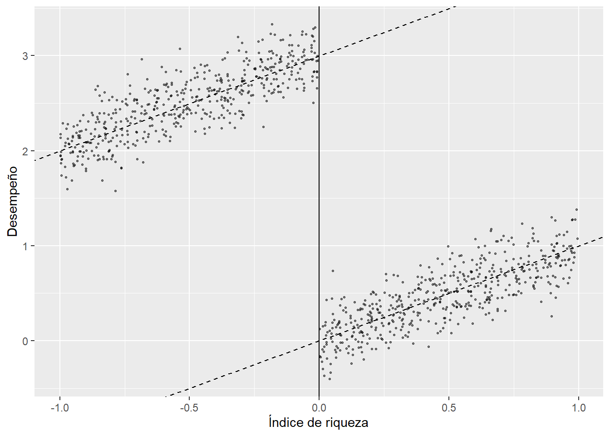

acafs <- read_csv("../files/ehec_data.csv")
table(filter(acafs,year==2018)$yexp2)
2014 2015 2016 2017 2019 Inf
22 3 2 1 2 16 Los datos en ehec_data.csv son datos de panel a nivel estado para los Estados Unidos de 2008 a 2019. A partir de 2014 se llevó a cabo un proceso de expansión de un programa de ayuda para subsidiar el costo de los servicios de salud de personas de bajos ingresos, Medicaid Expansion. La columna yexp2 indica el año en que cada estado es tratado con la expansión del programa, treated es un indicador de si el estado \(i\) es tratado en el año \(t\), mientras que rel_year indica el número de años desde la expansión. Si yexp2==Inf, entonces el estado no ha sido tratado para 2019. Se busca estimar el efecto de la expansión del programa en el porcentaje de la población asegurada que es de bajos ingresos, sin hijos, y de entre 25 y 64 años de edad, dins.
[5 puntos] ¿Por qué decimos que esta es una aplicación de la estimación de efectos de tratamiento con adopción escalonada?
En esta aplicación, cada estado comienza a ser tratado en indistintos momentos del tiempo. Si hacemos un tabulado de yexp2 notamos cuántos estados se vuelven tratados en cada año:
acafs <- read_csv("../files/ehec_data.csv")
table(filter(acafs,year==2018)$yexp2)
2014 2015 2016 2017 2019 Inf
22 3 2 1 2 16 El panel comienza en 2008. 22 estados son tratados desde 2014, 3 en 2015 y así sucesivamente. 16 estados nunca son tratados.
[5 puntos] Como punto de partida, estime el efecto del tratamiento sobre dins usando efectos fijos por estado y año (TWFE) y empleando una librería específica para efectos fijos, como felm. Tome en cuenta la agrupación de los errores. Interprete sus resultados.
Usando felm podemos incorporar ya el nivel de agrupación de los errores:
twfe <- felm(dins ~ treated | stfips + year | 0 | stfips,
data = acafs)
modelsummary(twfe,
coef_map = c('treated'),
stars = c('*' = .1, '**' = .05, '***'= 0.01),
gof_map = c('nobs'),
output = 'gt')| (1) | |
|---|---|
| treated | 0.070*** |
| (0.007) | |
| Num.Obs. | 552 |
| * p < 0.1, ** p < 0.05, *** p < 0.01 | |
[5 puntos] Compruebe que puede obtener el mismo resultado con una regresión lineal usando el paquete lm e incluyendo, además de la variable de tratamiento, dummies de estado y de año.
Estimamos con dummies:
m1 <- lm(dins ~ treated + factor(stfips) + factor(year),
data = acafs)Luego presentamos con errores clásicos y errores agrupados:
modelsummary(list(m1, m1),
coef_map = c('treated'),
vcov=list(NULL, clubSandwich::vcovCR(m1, type='CR1', cluster=acafs$stfips)),
stars = c('*' = .1, '**' = .05, '***'= 0.01),
gof_map = c('nobs'),
output = 'gt')| (1) | (2) | |
|---|---|---|
| treated | 0.070*** | 0.070*** |
| (0.004) | (0.007) | |
| Num.Obs. | 552 | 552 |
| * p < 0.1, ** p < 0.05, *** p < 0.01 | ||
[10 puntos] Ahora muestre que podemos obtener el coeficiente de TWFE a partir de una regresión bivariada entre el porcentaje de la población asegurada y treated, una vez purgada por efectos fijos. Para ello, primero estime una regresión de treated en función de los efectos fijos. Obtenga la predicción y luego defina una nueva variable igual a la diferencia entre treated y la predicción que acaba de obtener. Finalmente, obtenga el coeficiente de TWFE con una regresión del porcentaje de la población asegurada en función de la diferencia antes definida.
Corremos la primera regresión para purgar los efectos fijos:
d1 <- lm(treated ~ factor(stfips) + factor(year),
data = acafs)Definimos la nueva variable:
acafs <- acafs %>%
mutate(treated_hat = treated-predict(d1))Y finalmente estimamos:
summary(m2 <- lm(dins ~ treated_hat,
data = acafs))
Call:
lm(formula = dins ~ treated_hat, data = acafs)
Residuals:
Min 1Q Median 3Q Max
-0.225383 -0.066374 0.001295 0.069099 0.200551
Coefficients:
Estimate Std. Error t value Pr(>|t|)
(Intercept) 0.699824 0.003744 186.909 < 2e-16 ***
treated_hat 0.070321 0.014475 4.858 1.55e-06 ***
---
Signif. codes: 0 '***' 0.001 '**' 0.01 '*' 0.05 '.' 0.1 ' ' 1
Residual standard error: 0.08797 on 550 degrees of freedom
Multiple R-squared: 0.04115, Adjusted R-squared: 0.0394
F-statistic: 23.6 on 1 and 550 DF, p-value: 1.547e-06Obtenemos el mismo coeficiente. Frisch–Waugh–Lovell tenían razón:
modelsummary(list(m2),
coef_map = c('treated_hat'),
stars = c('*' = .1, '**' = .05, '***'= 0.01),
gof_map = c('nobs'),
output = 'gt')| (1) | |
|---|---|
| treated_hat | 0.070*** |
| (0.014) | |
| Num.Obs. | 552 |
| * p < 0.1, ** p < 0.05, *** p < 0.01 | |
[10 puntos] Realice la descomposición de Goodman-Bacon (2021). Construya un gráfico donde muestre en el eje \(x\) el peso otorgado a cada comparación 2x2 y en el eje \(y\) el efecto estimado correspondiente a cada comparación. Interprete el gráfico obtenido.
Como vimos en clase:
#Goodman-Bacon decomposition
df_bacon <- bacon(dins ~ treated,
data = acafs,
id_var = "stfips",
time_var = "year") type weight avg_est
1 Earlier vs Later Treated 0.14911 0.06983
2 Later vs Earlier Treated 0.05827 0.04486
3 Treated vs Untreated 0.79262 0.07228coef_bacon <- sum(df_bacon$estimate * df_bacon$weight)
print(paste("Weighted sum of decomposition =", round(coef_bacon, 4)))[1] "Weighted sum of decomposition = 0.0703"twfe <- feols(dins ~ treated | stfips + year,
data = acafs,
cluster = ~stfips)
#Gráfico
df_bacon %>%
ggplot(aes(x=weight,
y=estimate,
shape=type)) +
geom_point() +
geom_hline(yintercept = round(twfe$coefficients, 4))
Las comparaciones que más pesan en el estimador de efectos fijos son las de estados tratados con los nunca tratados, que llegan a recibir un peso de más de 0.6. La comparación con más peso tiene un efecto estimado de 0.0749, parecida al 0.07 que se obtiene con efectos fijos.
[10 puntos] Implemente el estimador de Callaway & Sant’Anna (2021) para estimar los efectos del tratamiento específicos para cada cohorte, usando el paquete did. Utilice como grupo de comparación los estados no tratados aún.
acafs <- acafs %>%
mutate(stfips2 = as.numeric(factor(stfips)))
atts_nyt <- att_gt(yname = "dins",
tname = "year",
idname = "stfips2",
gname = "yexp2",
data = acafs,
control_group = "notyettreated",
est_method = 'reg',
bstrap = TRUE,
biters = 1000,
print_details = FALSE,
panel = TRUE)
summary(atts_nyt)
Call:
att_gt(yname = "dins", tname = "year", idname = "stfips2", gname = "yexp2",
data = acafs, panel = TRUE, control_group = "notyettreated",
bstrap = TRUE, biters = 1000, est_method = "reg", print_details = FALSE)
Reference: Callaway, Brantly and Pedro H.C. Sant'Anna. "Difference-in-Differences with Multiple Time Periods." Journal of Econometrics, Vol. 225, No. 2, pp. 200-230, 2021. <https://doi.org/10.1016/j.jeconom.2020.12.001>, <https://arxiv.org/abs/1803.09015>
Group-Time Average Treatment Effects:
Group Time ATT(g,t) Std. Error [95% Simult. Conf. Band]
2014 2009 -0.0065 0.0049 -0.0199 0.0068
2014 2010 0.0111 0.0066 -0.0068 0.0291
2014 2011 0.0015 0.0053 -0.0127 0.0157
2014 2012 0.0016 0.0066 -0.0161 0.0194
2014 2013 0.0009 0.0070 -0.0181 0.0200
2014 2014 0.0467 0.0091 0.0221 0.0713 *
2014 2015 0.0692 0.0102 0.0415 0.0969 *
2014 2016 0.0785 0.0106 0.0498 0.1072 *
2014 2017 0.0725 0.0109 0.0430 0.1020 *
2014 2018 0.0738 0.0124 0.0402 0.1075 *
2014 2019 0.0803 0.0100 0.0534 0.1073 *
2015 2009 0.0071 0.0141 -0.0310 0.0452
2015 2010 -0.0245 0.0111 -0.0546 0.0056
2015 2011 -0.0027 0.0057 -0.0182 0.0128
2015 2012 0.0003 0.0035 -0.0092 0.0098
2015 2013 -0.0100 0.0112 -0.0404 0.0205
2015 2014 -0.0020 0.0072 -0.0215 0.0174
2015 2015 0.0491 0.0223 -0.0112 0.1093
2015 2016 0.0526 0.0146 0.0130 0.0922 *
2015 2017 0.0682 0.0100 0.0411 0.0952 *
2015 2018 0.0663 0.0124 0.0328 0.0998 *
2015 2019 0.0738 0.0114 0.0430 0.1046 *
2016 2009 0.0022 0.0061 -0.0144 0.0188
2016 2010 0.0511 0.0077 0.0304 0.0718 *
2016 2011 -0.0262 0.0360 -0.1237 0.0713
2016 2012 -0.0276 0.0433 -0.1449 0.0897
2016 2013 0.0440 0.0433 -0.0732 0.1612
2016 2014 -0.0322 0.0464 -0.1577 0.0933
2016 2015 0.0409 0.0166 -0.0042 0.0859
2016 2016 0.0317 0.0102 0.0041 0.0593 *
2016 2017 0.0368 0.0084 0.0141 0.0595 *
2016 2018 0.0645 0.0130 0.0294 0.0996 *
2016 2019 0.0825 0.0096 0.0565 0.1085 *
2017 2009 0.0102 0.0025 0.0034 0.0171 *
2017 2010 -0.0161 0.0036 -0.0259 -0.0064 *
2017 2011 0.0019 0.0028 -0.0056 0.0093
2017 2012 0.0177 0.0033 0.0088 0.0266 *
2017 2013 0.0012 0.0036 -0.0087 0.0111
2017 2014 -0.0063 0.0063 -0.0235 0.0109
2017 2015 0.0036 0.0072 -0.0160 0.0232
2017 2016 0.0398 0.0061 0.0234 0.0563 *
2017 2017 0.0471 0.0056 0.0319 0.0623 *
2017 2018 0.0681 0.0045 0.0558 0.0803 *
2017 2019 0.0650 0.0039 0.0543 0.0757 *
2019 2009 0.0189 0.0054 0.0042 0.0336 *
2019 2010 -0.0269 0.0089 -0.0511 -0.0027 *
2019 2011 -0.0244 0.0029 -0.0323 -0.0165 *
2019 2012 0.0024 0.0187 -0.0483 0.0530
2019 2013 0.0129 0.0074 -0.0072 0.0331
2019 2014 0.0003 0.0073 -0.0195 0.0202
2019 2015 -0.0108 0.0086 -0.0342 0.0125
2019 2016 -0.0182 0.0240 -0.0832 0.0467
2019 2017 0.0093 0.0195 -0.0434 0.0619
2019 2018 0.0062 0.0063 -0.0109 0.0233
2019 2019 0.0365 0.0053 0.0221 0.0510 *
---
Signif. codes: `*' confidence band does not cover 0
Control Group: Not Yet Treated, Anticipation Periods: 0
Estimation Method: Outcome Regressionggdid(atts_nyt)
[10 puntos] Reporte los resultados agregados obtenidos a partir del estimador Callaway & Sant’Anna (2021), usando una agregación dinámica que muestre los efectos promedio para cada periodo antes y después del tratamiento. Grafique e interprete los resultados.
Graficamos:
agg.es <- aggte(atts_nyt,
type = "dynamic")
summary(agg.es)
Call:
aggte(MP = atts_nyt, type = "dynamic")
Reference: Callaway, Brantly and Pedro H.C. Sant'Anna. "Difference-in-Differences with Multiple Time Periods." Journal of Econometrics, Vol. 225, No. 2, pp. 200-230, 2021. <https://doi.org/10.1016/j.jeconom.2020.12.001>, <https://arxiv.org/abs/1803.09015>
Overall summary of ATT's based on event-study/dynamic aggregation:
ATT Std. Error [ 95% Conf. Int.]
0.0688 0.0081 0.053 0.0846 *
Dynamic Effects:
Event time Estimate Std. Error [95% Simult. Conf. Band]
-10 0.0189 0.0056 0.0044 0.0333 *
-9 -0.0269 0.0085 -0.0489 -0.0049 *
-8 -0.0129 0.0113 -0.0422 0.0165
-7 -0.0014 0.0076 -0.0210 0.0182
-6 0.0189 0.0082 -0.0023 0.0401
-5 -0.0084 0.0051 -0.0216 0.0049
-4 0.0054 0.0079 -0.0152 0.0259
-3 0.0026 0.0048 -0.0097 0.0150
-2 -0.0012 0.0036 -0.0107 0.0082
-1 0.0049 0.0040 -0.0055 0.0154
0 0.0453 0.0061 0.0295 0.0611 *
1 0.0651 0.0082 0.0437 0.0864 *
2 0.0759 0.0086 0.0535 0.0983 *
3 0.0726 0.0092 0.0488 0.0963 *
4 0.0738 0.0109 0.0454 0.1022 *
5 0.0803 0.0107 0.0527 0.1080 *
---
Signif. codes: `*' confidence band does not cover 0
Control Group: Not Yet Treated, Anticipation Periods: 0
Estimation Method: Outcome Regressionggdid(agg.es)
[10 puntos] Reporte los resultados agregados obtenidos a partir del estimador Callaway & Sant’Anna (2021), usando una agregación or grupos que muestre los efectos promedio para cada cohorte del tratamiento. Grafique e interprete los resultados.
Graficamos:
agg.es <- aggte(atts_nyt,
type = "group")
summary(agg.es)
Call:
aggte(MP = atts_nyt, type = "group")
Reference: Callaway, Brantly and Pedro H.C. Sant'Anna. "Difference-in-Differences with Multiple Time Periods." Journal of Econometrics, Vol. 225, No. 2, pp. 200-230, 2021. <https://doi.org/10.1016/j.jeconom.2020.12.001>, <https://arxiv.org/abs/1803.09015>
Overall summary of ATT's based on group/cohort aggregation:
ATT Std. Error [ 95% Conf. Int.]
0.0657 0.0104 0.0452 0.0861 *
Group Effects:
Group Estimate Std. Error [95% Simult. Conf. Band]
2014 0.0702 0.0089 0.0502 0.0901 *
2015 0.0620 0.0136 0.0313 0.0927 *
2016 0.0539 0.0047 0.0434 0.0644 *
2017 0.0601 0.0040 0.0511 0.0691 *
2019 0.0365 0.0054 0.0243 0.0488 *
---
Signif. codes: `*' confidence band does not cover 0
Control Group: Not Yet Treated, Anticipation Periods: 0
Estimation Method: Outcome Regressionggdid(agg.es)
Suponga que se convierte en asesor de la instancia gubernamental encargada de la seguridad alimentaria. Al gobierno le interesa que la seguridad alimentaria de las familias productoras de maíz para autoconsumo no se vea afectada negativamente por la presencia de cierta plaga y dará una transferencia per cápita a todos los pequeños productores de maíz cuyos cultivos se considere están afectados por dicha plaga. Para determinar qué hogares reciben la transferencia se decide usar un índice de prevalencia de la plaga y se selecciona un umbral por arriba del cual está demostrado que los rendimientos del cultivo del maíz se ven seriamente afectados. Esta inspección se llevará a cabo por autoridades federales y el umbral es conocido solo por estas autoridades. Cuando se determine que la prevalencia está por encima del umbral, el monto del programa será transferido de manera inmediata, electrónicamente.
[5 puntos] ¿Qué aspectos del programa permitirían emplear un diseño de regresión discontinua para evaluar la efectividad de este sobre la seguridad alimentaria y cómo mostraría su validez empíricamente?
En este caso podemos usar el método de regresión discontinua por las siguientes razones:
i. La variable de selección es continua.
ii. Es estatus de tratamiento es una función determinística de la posición de la variable de selección respecto al umbral.
iii. La probabilidad de recibir el tratamiento es discontinua en el umbral.
iv. Los productores no pueden manipular la prevalencia de la plaga para posicionarse estratégicamente por encima del umbral.
[10 puntos] ¿Cómo emplearía el diseño de este programa para evaluar su efectividad con un modelo de regresión discontinua nítida? Elabore una gráfica donde explique una situación en la que el programa muestra ser efectivo. Describa cómo usaría una regresión para hacer inferencia respecto a la efectividad del programa.
La forma gráfica de inspeccionar la presencia de una regresión consiste en graficar la variable de resultados en función de la variable de asignación. En este caso, esperaríamos que las familias que están por encima del umbral tengan una diferencia notable en términos de seguridad alimentaria si la transferencia empleada se usa para comprar alimentos. No era estrictamente necesario simular un proceso para obtener una representación gráfica, pero aquí lo hice así. Quizás esto pueda ser de utilidad para futuras aplicaciones:
set.seed(1711)
plaga <- runif(1000, -1, 1)
y <- 3 + 2*plaga + 5*(plaga>=0) + rnorm(1000, mean = 0, sd = 0.2)
data.sharp <- data.frame(y, plaga, c = 0)
data.sharp %>%
ggplot() +
geom_point(aes(x=plaga, y=y), size=0.5, alpha=0.5) +
geom_abline(intercept = 3, slope = 2, linetype = "dashed") +
geom_abline(intercept = 8, slope = 2, linetype = "dashed") +
geom_vline(xintercept = 0)
Paramétricamente, la forma más sencilla de identificar el efecto de la discontinuidad es especificando una regresión como sigue:
\[y_i=\alpha+\tau D_i+ \beta x_i+\varepsilon_i\]
donde \(x_i\) es la variable de selección y \(D_i\) es una variable indicadora que toma el valor de uno cuando el índice de prevalencia de la plaga rebasa el umbral. Controlar por \(x_i\) captura la relación que tiene la prevalencia de la plaga en la seguridad alimentaria, por ejemplo, vía los rendimientos. Se recomiendan al menos dos tipos de procedimientos más completos para comprobar la robustez de los efectos encontrados.
El primero es incluir un polinomio lo suficientemente flexible de \(x_i\): \[y_i=\alpha+\tau D_i+ Bf(x_i)+\varepsilon_i\]
El segundo consiste en permitir que la pendiente sea diferente antes y después de la discontinuidad:
\[y_i=\alpha+\tau D_i +\beta_0(x_i-x_0)+\beta_1(x_i-x_0)D_i+\varepsilon_i\]
Más aún, es posible combinar estas dos posibilidades para dar lugar a modelos más flexibles. Se espera que las conclusiones sean robustas al uso de modelos extremadamente complejos.
[5 puntos] ¿Qué factores podrían invalidar el uso de este método para evaluar el programa?
La principal preocupación es la posibilidad de manipulación de la prevalencia de la plaga para que la medición lo clasifique como receptor del programa. Podemos pensar en situaciones donde esto pudiera suceder con un individuo altamente sofisticado que pudiera manipular la presencia de la plaga de forma estratégica. Pensando que esto es costoso, el individuo estratégicamente debería seleccionar un punto justo por encima del umbral. Aunque difícil de suceder esta posibilidad podría investigarse empíricamente, por ejemplo, verificando que no haya “amontonamientos” justo por encima de la discontinuidad.
Si existiera corrupción y muchos no elegibles recibieran la transferencia o si las familias no gastaran la transferencia en alimentos que mejoren su seguridad alimentaria el diseño también estaría comprometido.
Suponga que otro de los asesores juzga como demasiado paternalista la transferencia y propone que, en su lugar, se otorgue un cupón válido para canjearse por bultos de un plaguicida. Asumiendo que en una encuesta posterior usted podría conocer la cantidad precisa de plaguicida aplicado, ¿cómo emplearía un diseño de regresión discontinua difusa para evaluar el efecto del uso del plaguicida sobre la seguridad alimentaria? En particular, describa:
[5 puntos] ¿Cómo estimaría la forma reducida? ¿Cuál es el coeficiente relevante y cuál es su interpretación?
El problema puede ser visto entonces como un diseño de regresión discontinua difusa. La discontinuidad define la intensidad del tratamiento, en este caso dada por la cantidad de plaguicida efectivamente aplicado. La forma reducida se estima con una regresión de la variable de resultados sobre el instrumento. Al igual que cuando se estudió la interpretación del LATE, este coeficiente da la correlación entre la seguridad alimentaria y el estado del tratamiento, pero no toma en cuenta que la seguridad alimentaria también depende de la cantidad de plaguicida usado, una decisión endógena.
[5 puntos] ¿Cómo estimaría la primera y la segunda etapa? ¿Cuáles son los coeficientes relevantes y cuál es su interpretación?
La primera etapa consiste en estimar la relación entre la variable endógena y el instrumento. En este caso, el instrumento es una variable indicadora que toma valor de 1 si la prevalencia de la plaga rebasa el umbral. La decisión endógena es la cantidad de plaguicida empleado. Se estima por una regresión de la variable endógena en función del instrumento.
La segunda etapa consiste en estimar el efecto sobre la seguridad alimentaria de la cantidad plaguicida que predice el instrumento. Conceptualmente es como si se corriera una regresión de la variable de seguridad alimentaria en función de los valores ajustados en la primera etapa de la cantidad de plaguicida empleado. En la práctica, nunca se estiman dos regresiones separadas, sino que se usa la definición del estimador de mínimos cuadrados en dos etapas. El coeficiente es el efecto del uso de plaguicida en la seguridad alimentaria.
[5 puntos] ¿Cuáles son los supuestos necesarios para estimar este modelo usando variables instrumentales?
Los supuestos econométricos para la estimación del modelo de regresión discontinua difusa son los mismos que para cualquier otro problema de variables instrumentales: 1) Exclusión: el instrumento no pertenece a la ecuación estructural; y 2) Relevancia de la primera etapa: el instrumento está correlacionado con la variable endógena.